使用小程序
「 手机快充那些事
Title
」 如今，智能手机飞速发展，处理器越来越强、分辨率越来越高，耗电量也越来越大，手机电池容量不断提升但却跟人感觉越来越不禁用。摩尔定律带动着电子产品硬件性能刷刷往前冲，而电池的发展却几乎是止步不前，可以说今天往前数十几年，电池技术没有大突破，如果说核心理论和原理的话，几乎三十年都没有什么大的突破。如何解决电池的问题呢？ 一是简单粗暴增大体积增大容量，二是间接的通过快速充电，用最短的时间充满足够续航的电量，曲线救国弥补电量不足的缺陷。那么我们就来谈谈手机快充那些事。 1，电池快充原理
锂电池充电过程~~~
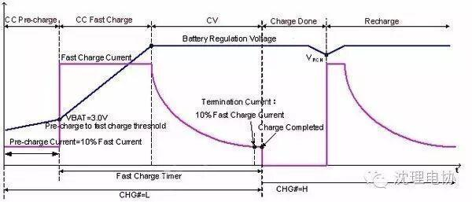
上图中横坐标为 上图中横坐标为时间，纵坐标为锂电池电压。由于锂电池的特殊性，过压或者欠压都会导致电池报废，所以现在的锂电池充放电保护电路原理就是测量锂电池电压，再根据电压判断锂电池是否处于正常状态（非过压、非欠压）。
锂电池的充电电流如上图粉红色线所示。锂电池的充电分为三个阶段，分别是恒流预充电、大电流恒流充电与恒压充电。
当电压低于3.0V时，充电器会采用100mA电流对锂电池进行预充电，就是上图C C Pre-charge阶段，中文名字叫恒流预冲电阶段，目的是慢慢恢复过放电的锂电池，是一种保护措施来的。合格的充电器都会有这个充电阶段。
然后与问题有关的就来了。当锂电池电压高于3.0V时，就进入到第二阶段，大电流恒流充电阶段（C C Fast charge）。由于锂电池经过第一阶段的预充，其状态已经比较稳定了（预充阶段的作用可以这样理解~但并不严谨）。所以在第二阶段，充电电流就可以适当提高，根据不同的电池来说，这个电流的大小可以从0.1C到几C不等，其中C是指电池容量，如2600mAh的锂电池，0.1C就是指260mA大小的电流。
在这一个充电阶段中，国家建议的标准充电是用0.1C电流进行充电的，这个就是标准充电。不过标准充电这个标准由于提出的时间很早，十几年前的就提出来。那时候因为锂电池技术远远不如现在稳定（不允许大电流充电），所以才会有这样一个标准~~~采用标准充电的唯一好处就是充电过程稳定，发生爆炸之类的几率非常小；缺点就是费时间！！！
而快速充电，就是指在这个阶段用大于0.1C的电流进行充电。如果锂电池容量为2600mAh，那么标准充电的电流为260mA，只要充电电流大于260mA，就可以定义为快速充电了。不过就从目前的锂电池水平与充放电管理芯片的水平来说，用1C的电流充电都没问题。所以快速充电也没有想象中的那么危险。一般快速充电的充电电流为0.2~0.8C，所以快速充电还是安全的。由于近几年来的提升，现在的充电器基本上都是快充类型的。
而锂电池充电的最后一个阶段为恒压充电阶段，这个阶段就是检测到锂电池电压等于4.2V时，充电器则进入恒压充电模式，这个阶段充电电压恒定为4.2V，充电电流则越来越小（慢慢充满了，电流肯定变小~）。当充电电流小于100mA时，就判断电池充满，切断充电电路。
这一阶段的特性，也可以解释为什么手机指示充满电后，拔出USB线再插进去，手机又显示继续充电。
另外，需要说一下的是：以上的充电是针对于单节锂电池的最理想充电过程，目前的合格锂电池充放电保护板都是这样子工作的。
手机快充主流来看有两种思路，一种是高电压低电流的方式，一种是低电压大电流的方式。目的都是为了提供更大的充电功率。
四种手机快充方案
悉数市面上的产品，快充技术大致有四种，即高通的QuickCharge版（如QC2.0、QC3.0），联发科版（Pump Express和Pump Express plus），OPPO 的VOOC，以及TI的Maxcharge（实际上它 同时兼容了高通QC2.0版和联发科Pump Express协议）。
常规USB 5V充电技术的瓶颈，充电环路示意图如图-1，充电环路阻抗约0.32Ω，那对于4.2V和4.35V电池最大充电电流有以下公式：（5-4.2）/0.32=2.5A （5V input source， Battery CV=4.2V）（5-4.35）/0.32=2.03A.（5V input source，BatteryCV=4.35V）
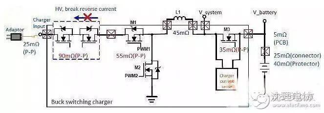
因此，手机的常规充电方式，无法再提高充电电流，不能满足现在手机电池越来越大后，对大充电电流的要求。
一、高通QC版快充技术
这是一个市面上采用较多的快充技术，小米4C，小米note，三星等主流品牌均在采用此充电技术。这与目前高端智能手机所采用的平台有相当关系。另外，这种技术相对简单，实现起来相对容易，成本提升不明显，市场较容易接受。高通QC充电技术有两个版本，分别是QC2.0和QC3.0，现在QC3.0 的手机还很少，普遍还是QC2.0。
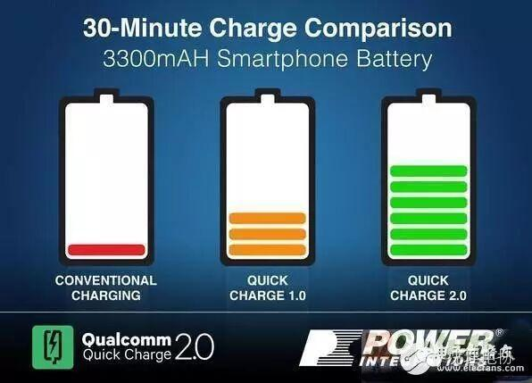
快充技术的原理，通过USB端口的D+与D-的不同电压给合，来向充电器申请相应的输出电压供手机充电。QC2.0并不是简单的D+与D-的组合就可以让充电器输出所需的电压，而是还有一些协议在里面，需要先发送握手信号，比如1.5s的握手电压组合，才能进行下一步的输出，否则，直接按图-4将 D+与D-电平设置好是不会改变充电器的输出电压的，这也是为了更好的保护非QC2.0技术的手机，不会因为误触发了充电器的升压机制而烧毁手机，图3是 QC2.0充电器原理图的调压部分。
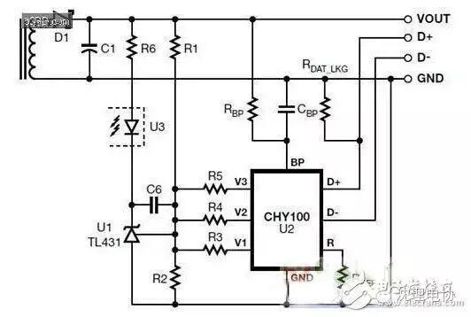
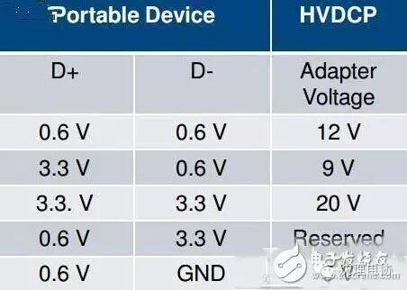
高通QC2.0 握手协议：
快充的充电器与手机通过micro USB接口中间两线（D+D-）上加载电压来进行通讯，调节QC2.0的输出电压。握手过程如下：当将充电器端通过数据线连到手机上时，充电器默认通过 MOS让D+D-短接，手机端探测到充电器类型为DCP（专用充电端口模式）。此时输出电压为5v，手机正常充电。 若手机支持QC2.0快速充电协议，则Android用户空间的HVDCP进程将会启动，开始在D+上加载0.325V的电压。当这个电压维持1.5s 后，充电器将断开D+和D-的短接， D-上的电压将会下降；手机端检测到D-上的电压下降后，HVDCP获取手机预设的充电器电压值，比如 9V，则设置D+上的电压为3.3V，D-上 的电压为0.6V，充电器输出9v电压。
快充技术的优点是，很好地解决常规手机充电电流的限制，由于充电器输出电压的提高，手机充电环路的阻抗限制的充电电流的问题得到了很好地解决，缺点是，效率仍不是很高，在手机端发热量还比较大。
随着高通QC3.0的发布，很好的弥补了QC2.0效率偏低的问题。
充电速度是传统充电方式的四倍，是Quick Charge 1.0的两倍，比Quick Charge 2.0充电效率高38%。Quick Charge 3.0采用最佳电压智能协商（INOV）算法，可以根据掌上终端确定需要的功率，在任意时刻实现最佳功率传输，同时实现效率最大化。另外，其电压选项范围更宽，移动终端可动态调整到其支持的最佳电压水平。具体来说，Quick Charge 3.0支持更细化的电压选择：以200mV增量为一档，提供从3.6V到20V电压的灵活选择。这样，你的手机可以从数十种功率水平中选择最适合的一档。
二、联发科Pump Express快充技术
与高通QC2.0虽在实现方式上有所不同，却有异曲同工之妙。高通QC2.0是通过USB端口的D+和D-来个信号实现调压，而联发科的Pump Express快充技术，是通过USB端口的VBUS来向充电器通讯并申请相应的输出电压的。QC2.0是通过配置D+和D-电压的方式来通讯，Pump Express是通过VBUS上的电流脉冲来通讯，但最终的目的是提升充电器的电压到5V，7V，9V。
快充技术的VBUS电流与VBUS电压波形如图-5：
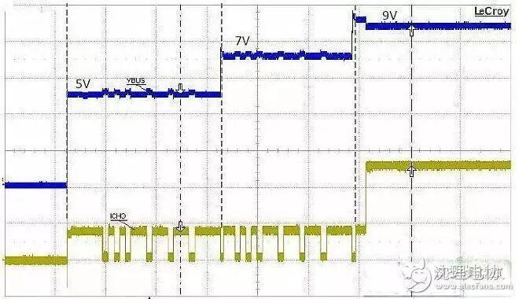
快充技术充电器原理图，及原理简介
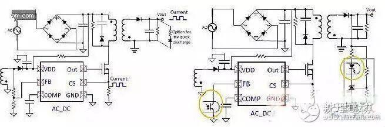
快充技术的优点，与QC2.0相似，由于提高了充电器的输出电压，解决了充电电流的限制。同时缺点也与QC2.0类似，由于充电器的调压档跨度比较大，带来手机端充电路效率偏低。于是，MTK Pump Express Plus快充技术随之诞生，Pump Express Plus技术与高通QC3.0类似，增加了调压档数，每档200mV。手机可以根据电池当前电压以及充电环路衰减，向充电器申请合适的电压，以达到以电效率的最大化，以进一步降低手机在充电过程中的发热量。
三、OPPO VOOC闪充技术
称自己研发的快充技术为‘ VOOC闪充技术‘，也是最神秘的快充技术，目前只有OPPO的几款产品在用，即Find 7和N3等，由于OPPO对此技术有专利限制，其它手机厂商只能叹为观止，且成本相对较高，充电器体积较大，便携方面没有其它快充技术的好。
的VOOC闪充技术与传统充电最大的区别在于，创新性的将充电控制电路移植到了适配器端，也就是将最大的发热源 移植到了适配器。这样控制电路在适配器，而被充电的电池在手机端，充电时手机发热得以很好的解决。为了更好的对充电流程进行控制 （比如控制电路需要实时监测电池电压、温度等），OPPO特别在适配器端加入了智能控制芯片MCU，适配器端实现了充电控制电路，智能控制充电的整个流程。
四、TI的maxcharge技术
TI的maxcharge技术是将高通QC2.0和联发科的Pump Express，以及TI自身的高性能充电管理做了一次整合，比较有代表性的方案有BQ25895，其最大充电电流可达5A，最大输入电压14V，可以很好地支持QC2.0和Pump Express标准的充电器。我们对TI提供的BQ25890 demo板实测，在4A充电时，芯片温度达55度左右（在环境温度25度下测试），差不多有30度的温升，这如果放在手机内部，将会是一个重要的热源。
TI的maxcharge充电芯片的简易原理图，
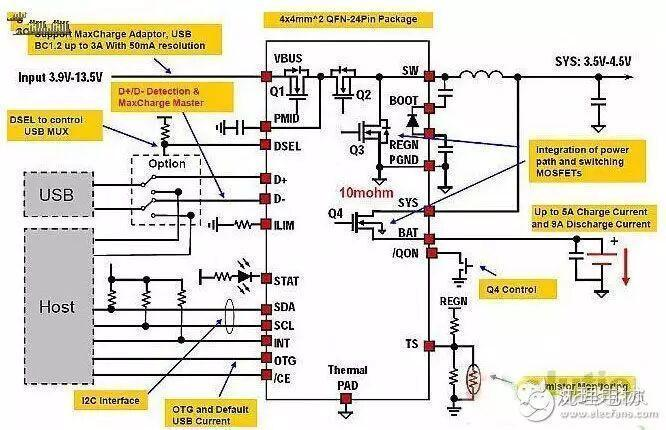
图-10 TI的maxcharge充电芯片的简易原理图
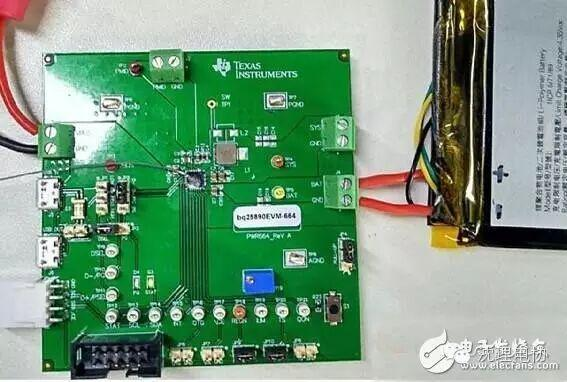
图-11 BQ25890 Demo板实测
TI的maxcharge充电技术的优点，由于同时兼容高通QC2.0和联发科Pump Express技术，因此也就同时具备了QC2.0和联发科Pump Express的优化点。它缺点也和高通与联发科一样，整体的效率还不是很高，因此发热量较大。
鉴于手机充电部分的发热问题，短时间QC3.0和Pump Express plus还未普及，那么我们是否还有其它方案来减小手机充电发热量呢？答案是肯定的。我们用两颗充电芯片同时对一颗电池进行充电，可以减少单独充电芯片的发热量。图-12是双充电芯片原理图，图-13是BQ25890+BQ25896双Demo实测，设置两颗充电芯片的充电电流都为2A，总共4A对电池充电，充电30分钟后，测到两个芯片的温度分别为42度和40度，室温为25度，芯片温升分别为17度和15度，比单芯片充电方案的温升降低了一半。因此，双充电芯片方案对提高充电效率，减少手机充电发热方面具有很大的优势。
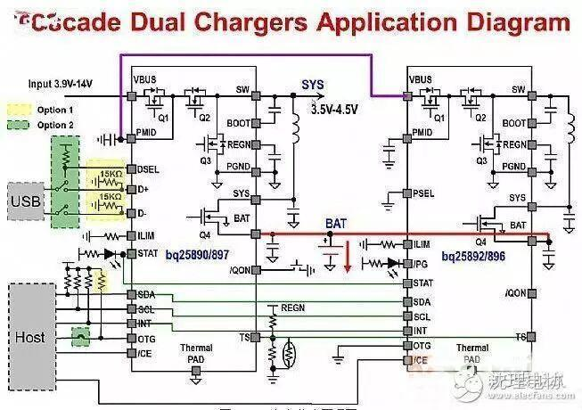
图-12 双充电芯片原理图
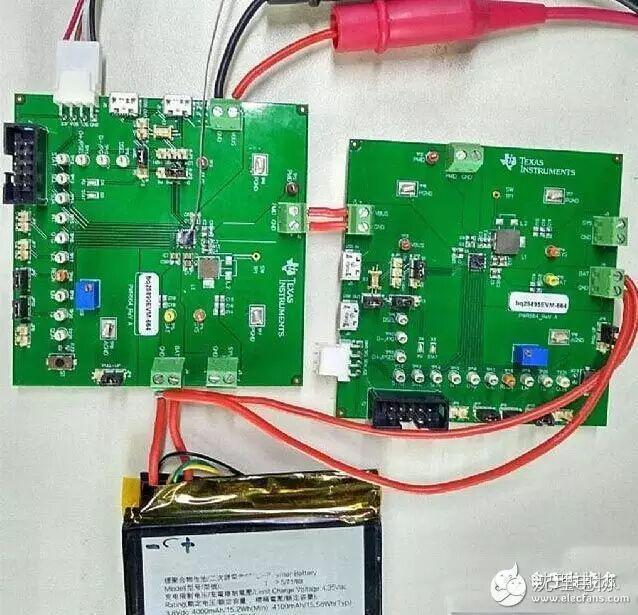
图-13 BQ25890+BQ25896双Demo充电实测
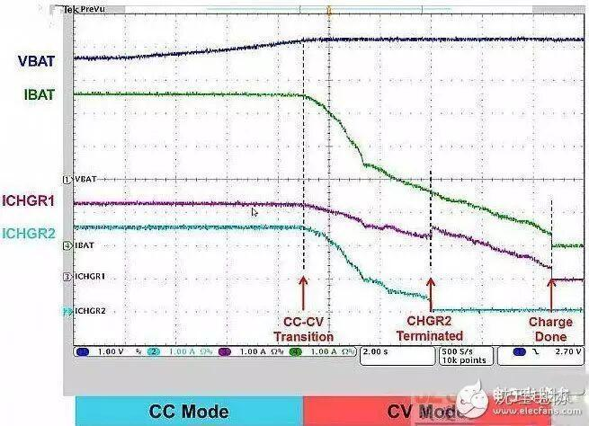
图-14 充电过程曲线